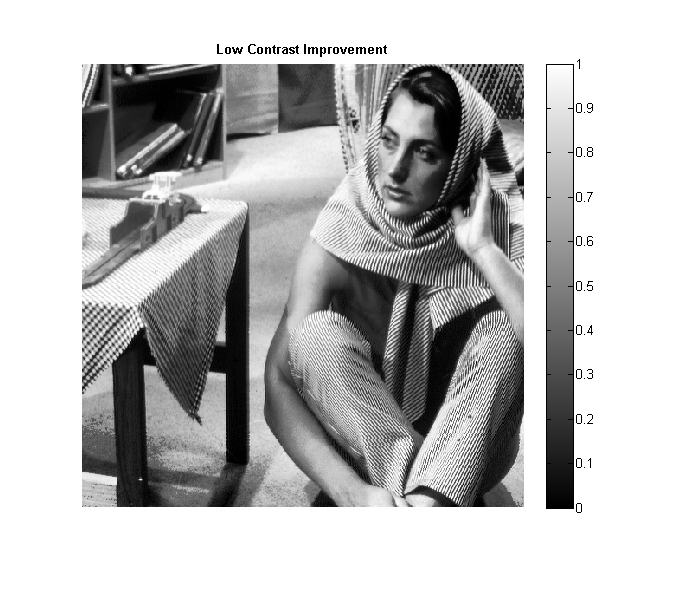
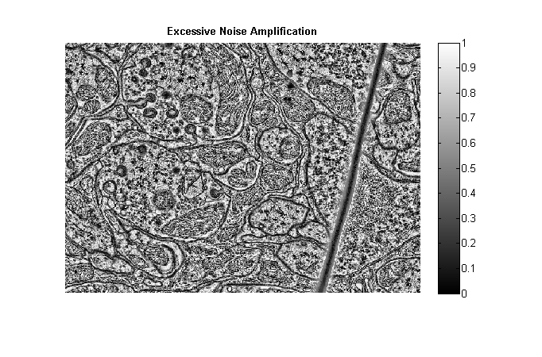
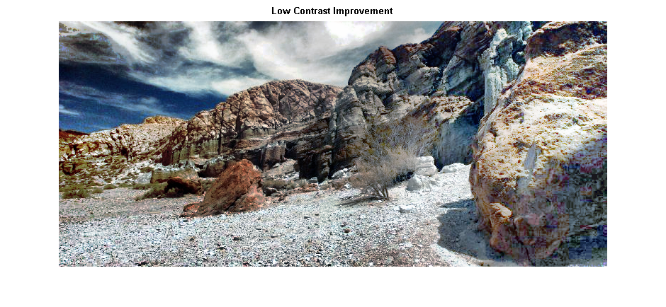

CS 663 : Digital Image Processing : Assignment 1
Contents
Question 2(a): Linear Contrast Stretching
tic; myNumOfColors = 255; myColorScale = [ [0:1/(myNumOfColors-1):1]' , [0:1/(myNumOfColors-1):1]' , [0:1/(myNumOfColors-1):1]' ]; img = imread('../data/barbara.png'); StretchedImg = myLinearContrastStretching(img); save '../images/Q2(a)_Barbara' StretchedImg; % INPUT IMAGE figure; imshow(img, 'Colormap',myColorScale); title('Input Image', 'FontWeight','bold'); daspect ([1 1 1]); axis tight; colormap(myColorScale); colormap gray; colorbar; % OUTPUT IMAGE figure; imshow(StretchedImg, 'Colormap',myColorScale); title('Output Image', 'FontWeight', 'bold'); colorbar; img = imread('../data/TEM.png'); StretchedImg = myLinearContrastStretching(img); save '../images/Q2(a)_TEM' StretchedImg; % INPUT IMAGE figure; imshow(img, 'Colormap',myColorScale); title('Input Image', 'FontWeight','bold'); colorbar; % OUTPUT IMAGE figure; imshow(StretchedImg, 'Colormap',myColorScale); title('Output Image', 'FontWeight', 'bold'); colorbar; img = imread('../data/canyon.png'); img_red = img(:,:,1); img_green = img(:,:,2); img_blue = img(:,:,3); StretchedImg_red = myLinearContrastStretching(img_red); StretchedImg_green = myLinearContrastStretching(img_green); EnhancedImg_blue = myLinearContrastStretching(img_blue); StretchedImg = cat(3, StretchedImg_red, StretchedImg_green, EnhancedImg_blue); save '../images/Q2(a)_canyon' StretchedImg; % INPUT IMAGE figure; imshow(img, 'Colormap',myColorScale); title('Input Image', 'FontWeight','bold'); % OUTPUT IMAGE figure; imshow(StretchedImg, 'Colormap',myColorScale); title('Output Image', 'FontWeight', 'bold'); toc;
Warning: Image is too big to fit on screen; displaying at 67% Warning: Image is too big to fit on screen; displaying at 67% Warning: Ignoring 'Colormap' parameter provided with a truecolor image. Warning: Ignoring 'Colormap' parameter provided with a truecolor image. Elapsed time is 6.356556 seconds.
Question 2(b): Histogram Equalization (HE).
tic; img = imread('../data/barbara.png'); EnhancedImg = myHE(img); save '../images/Q2(b)_Barbara' EnhancedImg; % INPUT IMAGE figure; imshow(img, 'Colormap',myColorScale); title('Input Image', 'FontWeight','bold'); daspect ([1 1 1]); axis tight; colormap(myColorScale); colormap gray; colorbar; % OUTPUT IMAGE figure; imshow(EnhancedImg, 'Colormap',myColorScale); title('Output Image', 'FontWeight', 'bold'); colorbar; img = imread('../data/TEM.png'); EnhancedImg = myHE(img); save '../images/Q2(b)_TEM' EnhancedImg; % INPUT IMAGE figure; imshow(img, 'Colormap',myColorScale); title('Input Image', 'FontWeight','bold'); colorbar; % OUTPUT IMAGE figure; imshow(EnhancedImg, 'Colormap',myColorScale); title('Output Image', 'FontWeight', 'bold'); colorbar; img = imread('../data/canyon.png'); img_red = img(:,:,1); img_green = img(:,:,2); img_blue = img(:,:,3); EnhancedImg_red = myHE(img_red); EnhancedImg_green = myHE(img_green); EnhancedImg_blue = myHE(img_blue); EnhancedImg = cat(3, EnhancedImg_red, EnhancedImg_green, EnhancedImg_blue); save '../images/Q2(b)_canyon' EnhancedImg; % INPUT IMAGE figure; imshow(img, 'Colormap',myColorScale); title('Input Image', 'FontWeight','bold'); % OUTPUT IMAGE figure; imshow(EnhancedImg, 'Colormap',myColorScale); title('Output Image', 'FontWeight', 'bold'); toc;
Warning: Image is too big to fit on screen; displaying at 67% Warning: Image is too big to fit on screen; displaying at 67% Warning: Ignoring 'Colormap' parameter provided with a truecolor image. Warning: Ignoring 'Colormap' parameter provided with a truecolor image. Elapsed time is 7.897123 seconds.

Question 2(c): Adaptive Histogram Equalization (AHE)
tic; img = imread('../data/barbara.png'); WindowSize = 150; EnhancedImg = myAHE(img, WindowSize); save '../images/Q2(c)_Barbara' EnhancedImg; % INPUT IMAGE figure; imshow(img, 'Colormap',myColorScale); title('Input Image', 'FontWeight','bold'); daspect ([1 1 1]); axis tight; colormap(myColorScale); colormap gray; colorbar; % OUTPUT IMAGE figure; imshow(EnhancedImg, 'Colormap',myColorScale); title('Enhanced Output Image', 'FontWeight', 'bold'); colorbar; % low contrast improvement WindowSize = 200; EnhancedImg = myAHE(img, WindowSize); save '../images/Q2(c)_Barbara_low_contrast_improvement' EnhancedImg; % OUTPUT IMAGE figure; imshow(EnhancedImg, 'Colormap',myColorScale); title('Low Contrast Improvement', 'FontWeight', 'bold'); colorbar; % Excessive Noise Amplification WindowSize = 50; EnhancedImg = myAHE(img, WindowSize); save '../images/Q2(c)_Barbara_Excessive_Noise_Amplification' EnhancedImg; % OUTPUT IMAGE figure; imshow(EnhancedImg, 'Colormap',myColorScale); title('Excessive Noise Amplification', 'FontWeight', 'bold'); colorbar; img = imread('../data/TEM.png'); WindowSize = 105; EnhancedImg = myAHE(img, WindowSize); save '../images/Q2(b)_TEM_Enhanced' EnhancedImg; % INPUT IMAGE figure; imshow(img, 'Colormap',myColorScale); title('Input Image', 'FontWeight','bold'); colorbar; % OUTPUT IMAGE figure; imshow(EnhancedImg, 'Colormap',myColorScale); title('Enhanced Output Image', 'FontWeight', 'bold'); colorbar; % low contrast improvement WindowSize = 200; EnhancedImg = myAHE(img, WindowSize); save '../images/Q2(c)_TEM_low_contrast_improvement' EnhancedImg; % OUTPUT IMAGE figure; imshow(EnhancedImg, 'Colormap',myColorScale); title('Low Contrast Improvement', 'FontWeight', 'bold'); colorbar; % Excessive Noise Amplification WindowSize = 50; EnhancedImg = myAHE(img, WindowSize); save '../images/Q2(c)_TEM_Excessive_Noise_Amplification' EnhancedImg; % OUTPUT IMAGE figure; imshow(EnhancedImg, 'Colormap',myColorScale); title('Excessive Noise Amplification', 'FontWeight', 'bold'); colorbar; img = imread('../data/canyon.png'); WindowSize = 100; img_red = img(:,:,1); img_green = img(:,:,2); img_blue = img(:,:,3); EnhancedImg_red = myAHE(img_red, WindowSize); EnhancedImg_green = myAHE(img_green, WindowSize); EnhancedImg_blue = myAHE(img_blue, WindowSize); EnhancedImg = cat(3, EnhancedImg_red, EnhancedImg_green, EnhancedImg_blue); save '../images/Q2(c)_Canyon_Enhanced' EnhancedImg; % INPUT IMAGE figure; imshow(img, 'Colormap',myColorScale); title('Input Image', 'FontWeight','bold'); % OUTPUT IMAGE figure; imshow(EnhancedImg, 'Colormap',myColorScale); title('Enhanced Output Image', 'FontWeight', 'bold'); % low contrast improvement WindowSize = 200; EnhancedImg_red = myAHE(img_red, WindowSize); EnhancedImg_green = myAHE(img_green, WindowSize); EnhancedImg_blue = myAHE(img_blue, WindowSize); EnhancedImg = cat(3, EnhancedImg_red, EnhancedImg_green, EnhancedImg_blue); save '../images/Q2(c)_Canyon_low_contrast_improvement' EnhancedImg; % OUTPUT IMAGE figure; imshow(EnhancedImg, 'Colormap',myColorScale); title('Low Contrast Improvement', 'FontWeight', 'bold'); % Excessive Noise Amplification WindowSize = 50; EnhancedImg_red = myAHE(img_red, WindowSize); EnhancedImg_green = myAHE(img_green, WindowSize); EnhancedImg_blue = myAHE(img_blue, WindowSize); EnhancedImg = cat(3, EnhancedImg_red, EnhancedImg_green, EnhancedImg_blue); save '../images/Q2(c)_Canyon_Excessive_Noise_Amplification' EnhancedImg; % OUTPUT IMAGE figure; imshow(EnhancedImg, 'Colormap',myColorScale); title('Excessive Noise Amplification', 'FontWeight', 'bold'); toc;
Warning: Image is too big to fit on screen; displaying at 67% Warning: Image is too big to fit on screen; displaying at 67% Warning: Image is too big to fit on screen; displaying at 67% Warning: Image is too big to fit on screen; displaying at 67% Warning: Ignoring 'Colormap' parameter provided with a truecolor image. Warning: Ignoring 'Colormap' parameter provided with a truecolor image. Warning: Ignoring 'Colormap' parameter provided with a truecolor image. Warning: Ignoring 'Colormap' parameter provided with a truecolor image. Elapsed time is 915.956222 seconds.  
Question 2(d): Contrast-Limited Adaptive Histogram Equalization (CLAHE)
tic; img = imread('../data/barbara.png'); WindowSize = 150; Threshold = 350; EnhancedImg = myCLAHE(img, WindowSize, Threshold); save '../images/Q2(d)_Barbara_Enhanced' EnhancedImg; % INPUT IMAGE figure; imshow(img, 'Colormap',myColorScale); title('Input Image', 'FontWeight','bold'); daspect ([1 1 1]); axis tight; colormap(myColorScale); colormap gray; colorbar; % OUTPUT IMAGE figure; imshow(EnhancedImg, 'Colormap',myColorScale); title('Enhanced Output Image', 'FontWeight', 'bold'); colorbar; % Half histogram-threshold parameter WindowSize = 200; Threshold = 175; EnhancedImg = myCLAHE(img, WindowSize, Threshold); save '../images/Q2(d)_Barbara_half_threshold' EnhancedImg; % OUTPUT IMAGE figure; imshow(EnhancedImg, 'Colormap',myColorScale); title('Half Threshold', 'FontWeight', 'bold'); colorbar; img = imread('../data/TEM.png'); Threshold = 350; EnhancedImg = myCLAHE(img, WindowSize, Threshold); save '../images/Q2(d)_TEM_Enhanced' EnhancedImg; % INPUT IMAGE figure; imshow(img, 'Colormap',myColorScale); title('Input Image', 'FontWeight','bold'); colorbar; % OUTPUT IMAGE figure; imshow(EnhancedImg, 'Colormap',myColorScale); title('Enhanced Output Image', 'FontWeight', 'bold'); colorbar; % Half histogram-threshold parameter WindowSize = 200; Threshold = 175; EnhancedImg = myCLAHE(img, WindowSize, Threshold); save '../images/Q2(d)_TEM_half_threshold' EnhancedImg; % OUTPUT IMAGE figure; imshow(EnhancedImg, 'Colormap',myColorScale); title('Half Threshold', 'FontWeight', 'bold'); colorbar;
Warning: Image is too big to fit on screen; displaying at 67% Warning: Image is too big to fit on screen; displaying at 67% Warning: Image is too big to fit on screen; displaying at 67%

img = imread('../data/canyon.png'); WindowSize = 200; Threshold = 0.6; img_red = img(:,:,1); img_green = img(:,:,2); img_blue = img(:,:,3); EnhancedImg_red = myCLAHE(img_red, WindowSize, Threshold); EnhancedImg_green = myCLAHE(img_green, WindowSize, Threshold); EnhancedImg_blue = myCLAHE(img_blue, WindowSize, Threshold); EnhancedImg = cat(3, EnhancedImg_red, EnhancedImg_green, EnhancedImg_blue); save '../images/Q2(d)_Canyon_Enhanced' EnhancedImg; % INPUT IMAGE figure; imshow(img, 'Colormap',myColorScale); title('Input Image', 'FontWeight','bold'); % OUTPUT IMAGE figure; imshow(EnhancedImg, 'Colormap',myColorScale); title('Enhanced Output Image', 'FontWeight', 'bold');
Warning: Ignoring 'Colormap' parameter provided with a truecolor image. Warning: Ignoring 'Colormap' parameter provided with a truecolor image.
Half Threshold
Threshold = 175; EnhancedImg_red = myCLAHE(img_red, WindowSize, Threshold); EnhancedImg_green = myCLAHE(img_green, WindowSize, Threshold); EnhancedImg_blue = myCLAHE(img_blue, WindowSize, Threshold); EnhancedImg = cat(3, EnhancedImg_red, EnhancedImg_green, EnhancedImg_blue); save '../images/Q2(d)_Canyon_half_threshold' EnhancedImg; % OUTPUT IMAGE figure; imshow(EnhancedImg, 'Colormap',myColorScale); title('Half Threshold', 'FontWeight', 'bold'); colorbar; toc;
Warning: Ignoring 'Colormap' parameter provided with a truecolor image. Elapsed time is 972.782289 seconds.